La ciudad vieja

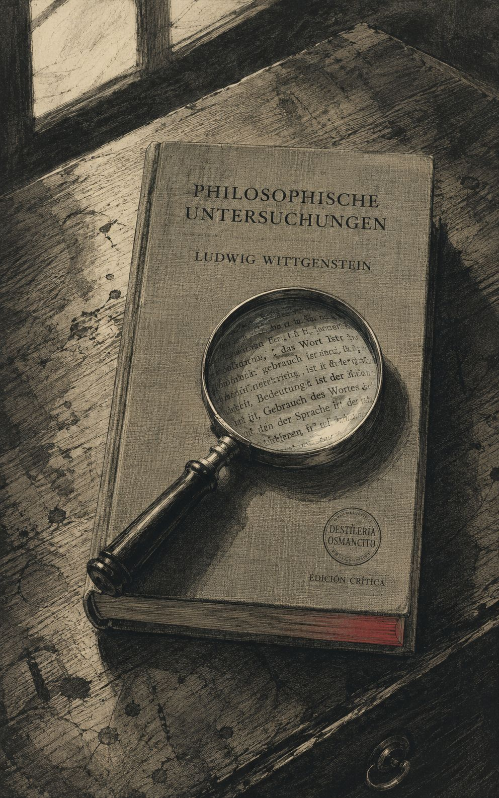
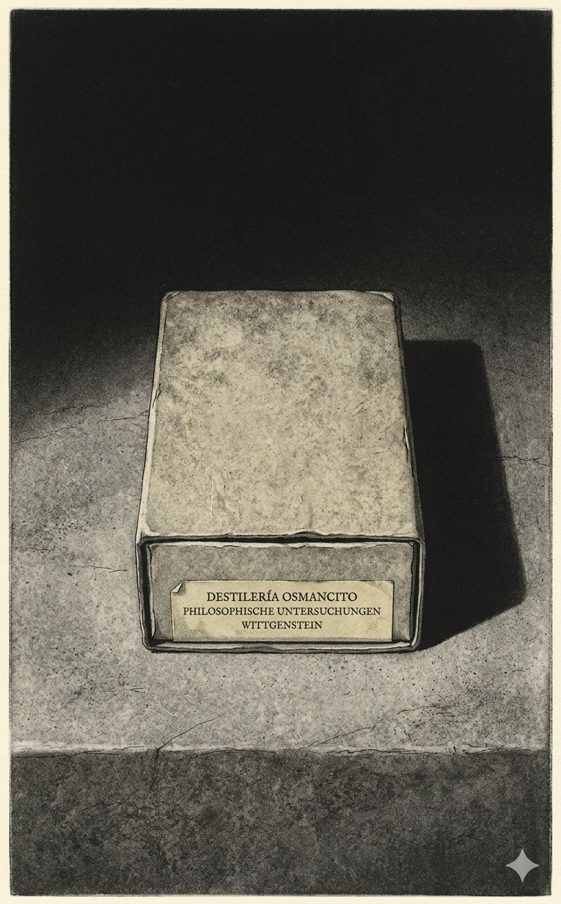
Una caja de cerillas cerrada sobre una superficie de piedra gris. El interior —el escarabajo— no existe para el observador y nunca existirá desde afuera: es la privacidad hecha objeto cotidiano.
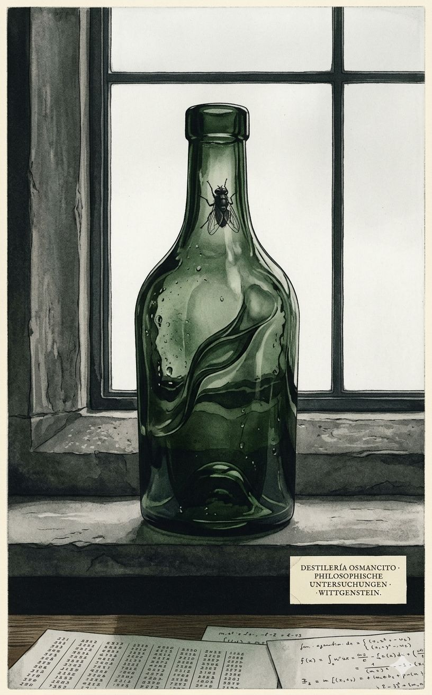
La filosofía es la botella. El corpus es el intento de mostrar a la mosca la salida.
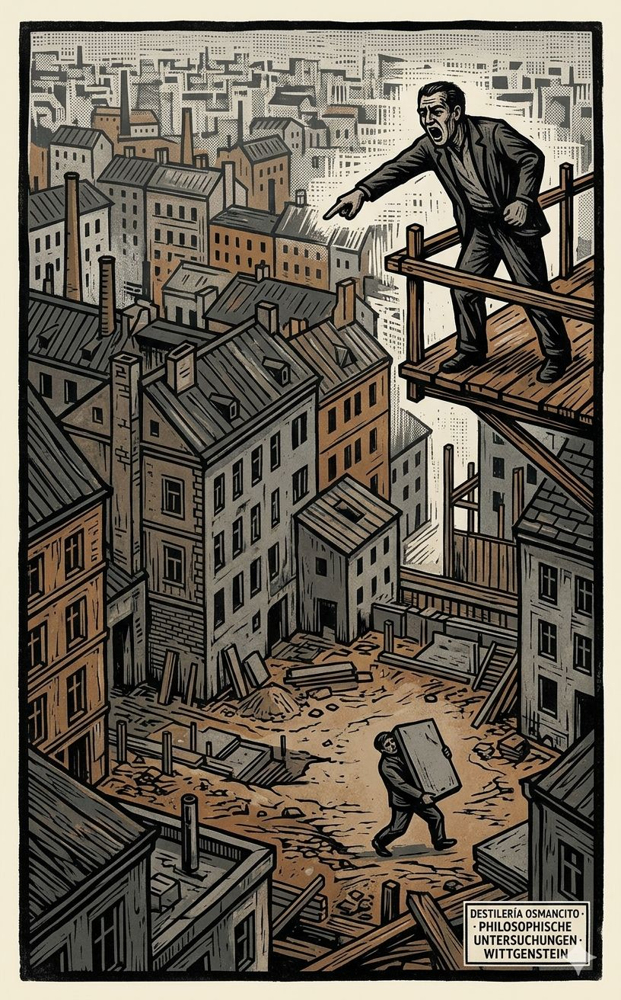
Visto desde muy arriba, un solar de construcción en una ciudad que podría ser Viena en 1910 o Cambridge en 1940 —la ambigüedad es estructural, no decorativa. El lenguaje ocurrió ahí, en ese hueco que separa la boca de la piedra.
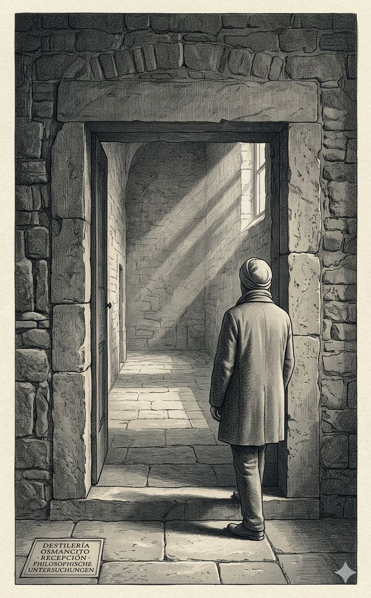
El epitome pesa más que su extensión. Cada aforismo es un golpe contra el propio deseo de teorizar — y el texto lo sabe, por eso se interrumpe y recomienza. El paisaje que dibuja no es una doctrina, sino el mapa de un extrañamiento: el lenguaje no funciona como creíamos, y esa pérdida es la única ganancia posible.
Un epitome que no aligera el peso, sino que lo concentra — como si las 3.400 palabras fueran el sedimento de dieciséis años de no poder decir otra cosa.
Recibir estas páginas es recibir una advertencia. No un resumen, sino un sedimento. Cada parágrafo es un esbozo, no un ladrillo. El corpus no explica una doctrina; describe un método de combate contra el embrujo del lenguaje. Viene con una cuota de palabras cumplida, como si el autor hubiera firmado un contrato con la brevedad. Pero la brevedad no aligera: concentra la densidad de un paisaje atravesado durante dieciséis años. Lo que se encuentra aquí no es un sistema, sino el gesto de señalar la salida del tarro.
Título — Epítome — Investigaciones filosóficas
Autor — Ludwig Wittgenstein
Año — 1953
Género — Filosofía analítica / Aforismo filosófico
Extensión estimada — 3.400 palabras, aproximadamente 14 páginas, 8 secciones numeradas más un prólogo
Idioma original — Alemán
Palabra más frecuente con contenido — Lenguaje
El corpus condensa las Investigaciones filosóficas de Wittgenstein, articulando una crítica a la concepción referencial del lenguaje a través de la noción de “juegos de lenguaje” y “semejanzas de familia”. Despliega una investigación sobre el seguimiento de reglas, argumentando que éste es una práctica pública y no un proceso mental privado. Finalmente, aborda el problema del lenguaje privado, concluyendo que la sensación interna no es un objeto designable en un lenguaje que carece de criterios públicos de corrección.
La investigación parte de la imagen agustiniana del lenguaje como denominación de objetos, para mostrar su insuficiencia mediante el ejemplo del tendero que usa tablas de muestras. Introduce los juegos de lenguaje como totalidades formadas por lenguaje y acción, enfatizando la diversidad de usos sobre la unidad esencial. Rechaza la idea de una esencia común del lenguaje, proponiendo en su lugar “semejanzas de familia” que entrecruzan los fenómenos. La definición ostensiva se revela interpretable de múltiples maneras, por lo que la significación de una palabra reside en su uso, no en su portador. La paradoja del seguimiento de reglas muestra que cualquier acción puede hacerse concordar con una regla, disolviendo la idea de interpretación infinita y afirmando que seguir la regla es una práctica social. El argumento del lenguaje privado, ejemplificado en el diario de sensaciones y la caja del escarabajo, demuestra que un lenguaje puramente interno carecería de criterios de corrección, volviendo inútil el término “correcto”. La filosofía no explica ni deduce, sino que describe el uso efectivo del lenguaje para disolver los problemas que surgen cuando el lenguaje “está de fiesta”. El objetivo final es mostrar a la mosca la salida del tarro, es decir, liberar el entendimiento del embrujo gramatical.
El corpus produce una extraña doble sensación: la de estar ante una verdad inapelable y, al mismo tiempo, ante una advertencia de no tomarla como tal. Su forma — fragmentaria, iterativa, de autointerrupción — es su mensaje. No se deja usar como manual; exige ser rehecho en cada lectura. Es un texto que no quiere tener discípulos, sino compañeros de viaje. Su temperatura es la de alguien que ha visto el límite y solo puede señalarlo sin cruzarlo.
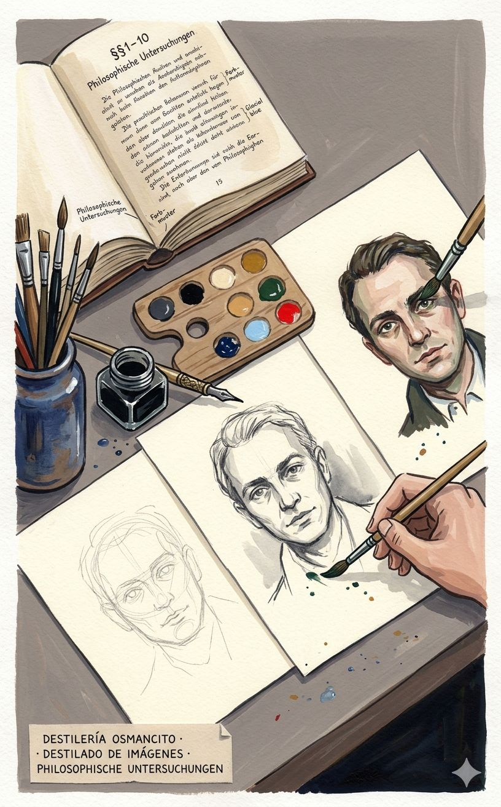
La ciudad vieja no se deja fotografiar desde arriba — hay que perderse en ella para saber que es una ciudad.
El corpus condensa trece núcleos filosóficos en ~3.400 palabras. Su densidad visual es extrema: cada parágrafo contiene al menos una imagen latente (el tendero, la caja de herramientas, la ciudad, el escarabajo, la mosca, el cubo, el indicador de camino). Sin embargo, el protocolo exige evitar la repetición. Identifico siete momentos que merecen existencia visual: los que no ilustran conceptos sino que encarnan el movimiento del pensamiento wittgensteiniano — de la confianza en la designación al extrañamiento ante la regla, y de ahí a la salida.
1. Grabado en madera de expresión alemana (Die Brücke) El corpus habla de formas de vida, de juegos, de costumbres — necesita una textura que no se deslice, que se grabe.
2. Diagrama técnico de mediados de siglo (instrucciones de montaje) Wittgenstein desarma el lenguaje como si fuera un mecanismo; la claridad de la línea y la ausencia de retórica sirven a la descripción.
3. Acuarela de paisaje urbano borroso (Turner tardío) La luz y la niebla; los límites del concepto son borrosos, pero la fotografía borrosa sigue siendo fotografía de una persona.
Estilo seleccionado: Grabado en madera de expresión alemana. La temperatura del corpus es de lucha contra el embrujamiento — necesita el contraste violento del blanco y negro, la talla que no admite corrección, la mano que empuja la gubia. La filosofía como trabajo, no como contemplación.
Negro de hollín, gris de sombra, blanco roto de papel envejecido. Un único acento: un rojo que no es rojo — el de la muestra de color que nunca es el color.
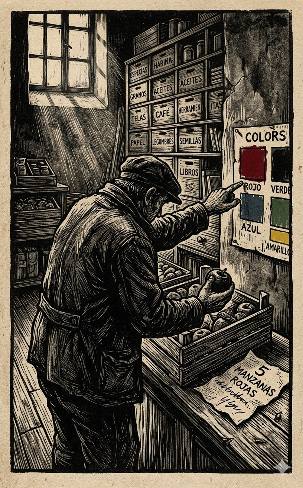
§§ 1–8. La escena primitiva del lenguaje: alguien compra cinco manzanas rojas. El tendero no “entiende” — opera.
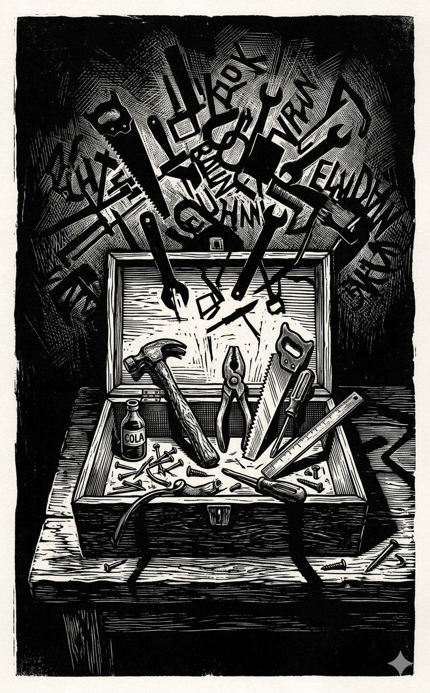
§ 11. La diversidad de funciones del lenguaje no es una metáfora — es una constatación.
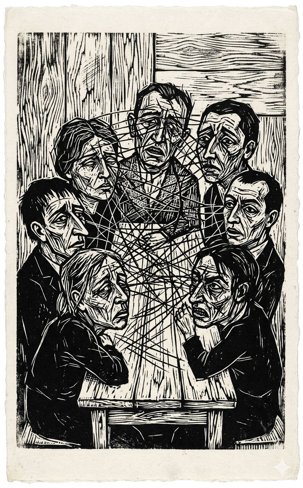
§§ 65–77. Los juegos no comparten una esencia — comparten parentescos que se superponen y entrecruzan.
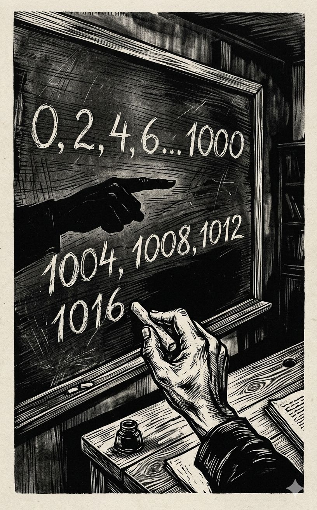
§§ 138–200. El alumno escribe “1000, 1004, 1008” cuando le ordenaron “+2”. La regla no determina la acción.
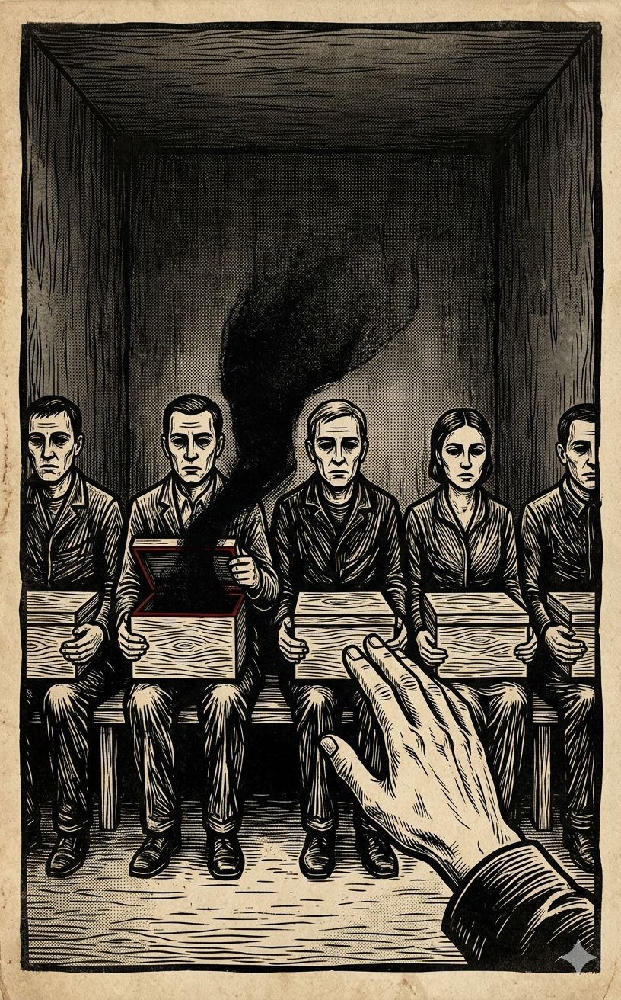
§ 293. Cada uno tiene una caja; dentro, lo que cada uno llama “escarabajo”. Nadie puede mirar dentro de la caja del otro.
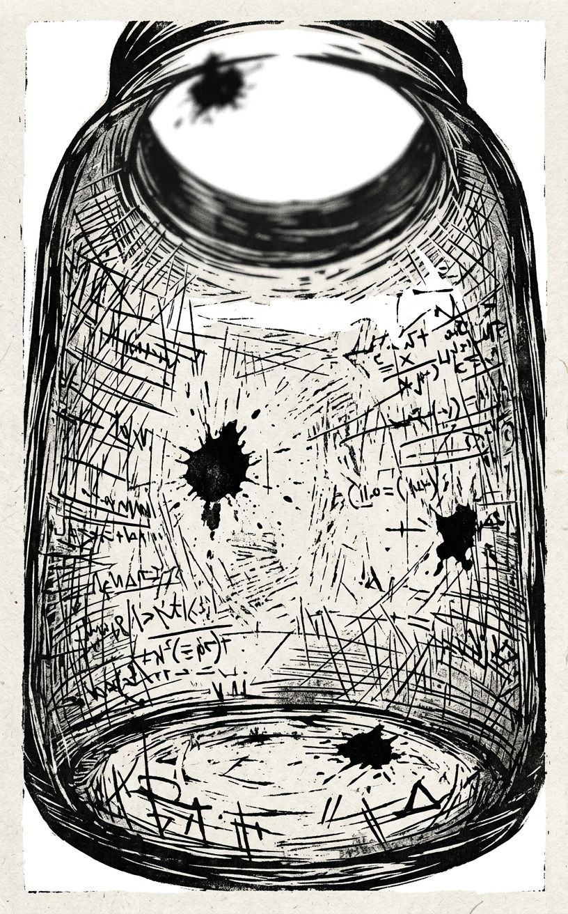
§ 309. “Mostrarle a la mosca la salida del tarro atrapamoscas.”
§ 18. El lenguaje como una ciudad vieja: callejuelas, plazas, casas de distintas épocas, y alrededor, nuevos barrios con calles regulares.